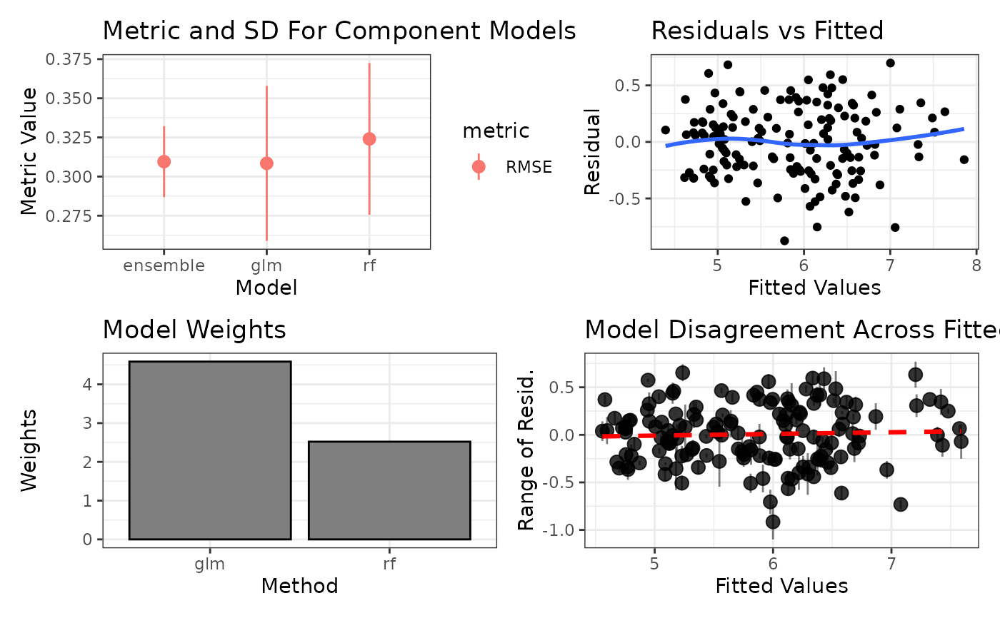

Convenience function for more in-depth diagnostic plots of caretStack objects
Source:R/caretStack.R
autoplot.caretStack.RdThis function provides a more robust series of diagnostic plots for a caretEnsemble object.
Usage
# S3 method for class 'caretStack'
autoplot(object, training_data = NULL, xvars = NULL, show_class_id = 2L, ...)Arguments
- object
a
caretStackobject- training_data
The data used to train the ensemble. Required if xvars is not NULL Must be in the same row order as when the models were trained.
- xvars
a vector of the names of x variables to plot against residuals
- show_class_id
For classification only: which class level to show on the plot
- ...
ignored
Value
A grid of diagnostic plots. Top left is the range of the performance metric across each component model along with its standard deviation. Top right is the residuals from the ensembled model plotted against fitted values. Middle left is a bar graph of the weights of the component models. Middle right is the disagreement in the residuals of the component models (unweighted) across the fitted values. Bottom left and bottom right are the plots of the residuals against two random or user specified variables. Note that the ensemble must have been trained with savePredictions = "final", which is required to get residuals from the stack for the plot.
Examples
set.seed(42)
data(models.reg)
ens <- caretStack(models.reg[1:2], method = "lm")
#> Loading required package: ggplot2
#> Loading required package: lattice
autoplot(ens)
#> `geom_smooth()` using method = 'loess' and formula = 'y ~ x'
#> `geom_smooth()` using formula = 'y ~ x'
